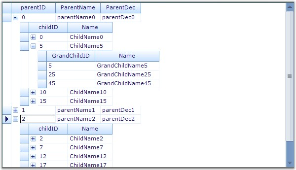
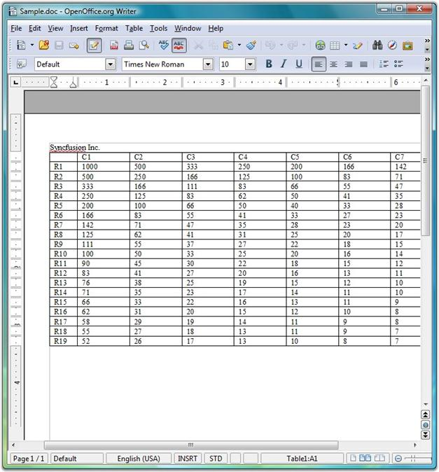
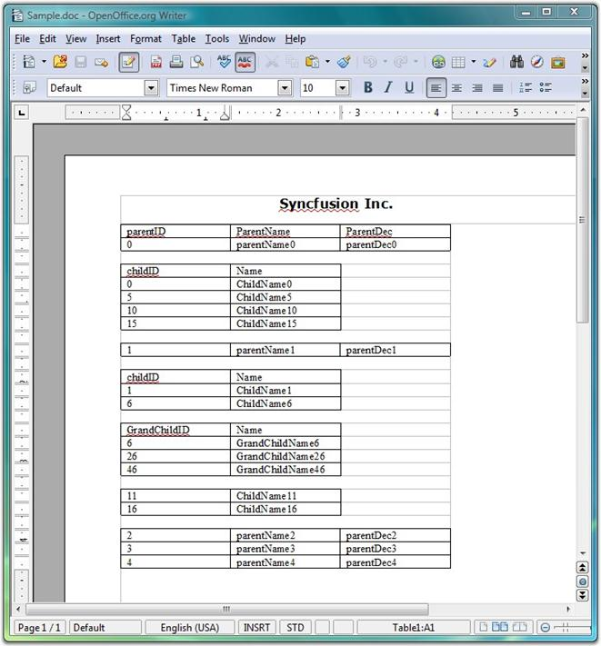

This topic illustrates how to convert Grid and Grid Grouping content to Word format.
Grid to Word Conversion
The GridWordConverter class provides support to convert grid content into a Word document. It also provides support to add headers and footers to the document.
Essential DocIO libraries are used to support the conversion of grid content into a Word document. The following dependent assemblies must be included in your Windows application to work with the GridWordConverter helper class: Syncfusion.DocIO.Base and Syncfusion.GridHelperClasses.Windows.
The following code examples illustrate the conversion of Grid content to Word document.
1. Using C#
|
[C#]
GridWordConverter converter = new GridWordConverter(true, true); converter.DrawHeader+=new GridWordConverterBase.DrawDocHeaderFooterEventHandler(converter_DrawHeader); converter.DrawFooter+=new GridWordConverterBase.DrawDocHeaderFooterEventHandler(converter_DrawFooter); converter.GridToWord("Sample.doc", gridControl1); System.Diagnostics.Process.Start("Sample.doc");
void converter_DrawFooter(object sender, DocHeaderFooterEventArgs e) { e.Footer.AddParagraph().AppendText("Copyright 2001-2008"); }
void converter_DrawHeader(object sender, DocHeaderFooterEventArgs e) { e.Header.AddParagraph().AppendText("Syncfusion Inc."); } |
2. Using VB.NET
|
[VB.NET]
Private converter As New GridWordConverter(True, True) Private converter.DrawHeader+= New GridWordConverterBase.DrawDocHeaderFooterEventHandler(AddressOf converter_DrawHeader) Private converter.DrawFooter+= New GridWordConverterBase.DrawDocHeaderFooterEventHandler(AddressOf converter_DrawFooter) converter.GridToWord("Sample.doc", gridControl1) System.Diagnostics.Process.Start("Sample.doc")
void converter_DrawFooter(Object sender, DocHeaderFooterEventArgs e) e.Footer.AddParagraph().AppendText("Copyright 2001-2008")
void converter_DrawHeader(Object sender, DocHeaderFooterEventArgs e) e.Header.AddParagraph().AppendText("Syncfusion Inc.") |
The following screen shots illustrate Grid to Word conversion.

Figure 474: Grid Control

Figure 475: Grid control content converted to Word Document
Grouping Grid to Word Conversion
The GroupingGridWordConverter class provides support to convert grouping grid content into a Word document. It also provides support to add headers and footers to the document.
Essential DocIO libraries are used to support the conversion of grouping grid content into a Word document. The following dependent assemblies must be included in your Windows application to work with the GroupingGridWordConverter helper class: Syncfusion.DocIO.Base and Syncfusion.GridHelperClasses.Windows.
The following code examples illustrate the conversion of Grouping Grid content to Word document.
1. Using C#
|
[C#]
GroupingGridWordConverter converter = new GroupingGridWordConverter(true, true); converter.DrawHeader += new GridWordConverterBase.DrawDocHeaderFooterEventHandler(converter_DrawHeader); converter.DrawFooter += new GridWordConverterBase.DrawDocHeaderFooterEventHandler(converter_DrawFooter); converter.GroupingGridToWord("Sample.doc", gridGroupingControl1); System.Diagnostics.Process.Start("Sample.doc");
void converter_DrawFooter(object sender, DocHeaderFooterEventArgs e) { IWTextRange txt = e.Footer.AddParagraph().AppendText("\t\t\tCopyright Syncfusion Inc. 2001 - 2008"); txt.CharacterFormat.Font = new Font("verdana", 12f, FontStyle.Bold); }
void converter_DrawHeader(object sender, DocHeaderFooterEventArgs e) { IWTextRange txt = e.Header.AddParagraph().AppendText("\t\t\t\tSyncfusion Inc.\n"); txt.CharacterFormat.Font = new Font("verdana", 12f, FontStyle.Bold); } |
2. Using VB.NET
|
[VB.NET]
Private converter As New GroupingGridWordConverter(True, True) Private converter.DrawHeader += New GridWordConverterBase.DrawDocHeaderFooterEventHandler(AddressOf converter_DrawHeader) Private converter.DrawFooter += New GridWordConverterBase.DrawDocHeaderFooterEventHandler(AddressOf converter_DrawFooter) converter.GroupingGridToWord("Sample.doc", gridGroupingControl1) System.Diagnostics.Process.Start("Sample.doc")
void converter_DrawFooter(Object sender, DocHeaderFooterEventArgs e) Dim txt As IWTextRange = e.Footer.AddParagraph().AppendText(Constants.vbTab + Constants.vbTab + Constants.vbTab & "Copyright Syncfusion Inc. 2001 - 2008") txt.CharacterFormat.Font = New Font("verdana", 12.0F, FontStyle.Bold)
void converter_DrawHeader(Object sender, DocHeaderFooterEventArgs e) Dim txt As IWTextRange = e.Header.AddParagraph().AppendText(Constants.vbTab + Constants.vbTab + Constants.vbTab + Constants.vbTab & "Syncfusion Inc." & Constants.vbLf) txt.CharacterFormat.Font = New Font("verdana", 12.0F, FontStyle.Bold) |
The following screen shots illustrate Grouping Grid to Word conversion.
Figure 476: Grouping Grid Control

Figure 477: Grouping Grid control content converted to Word Document